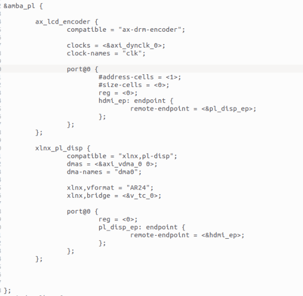
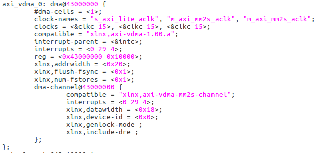
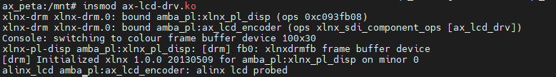
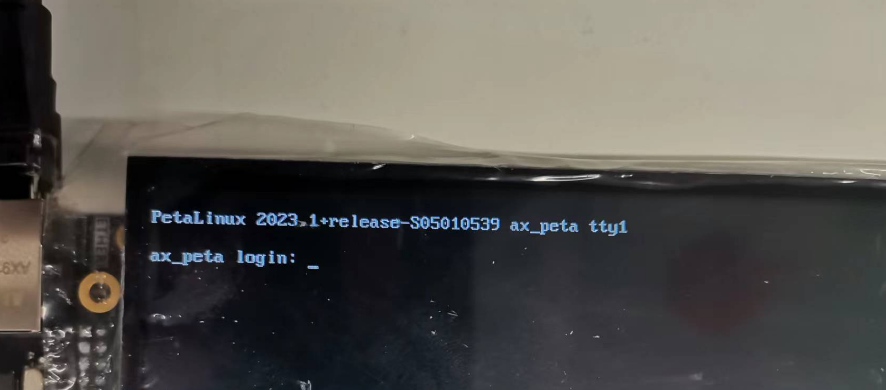

LCD驱动#
framebuffer框架#
lcd显示原理通俗的来说一般是这样：lcd通过若干数据线连接到主控芯片(除了数据线之外，还有时钟线、同步信号线等)，主控芯片分配一块内存空间用于存放显示画面数据，通过数据线发送画面数据到lcd屏幕显示。这一块内存空间就是帧缓冲framebuffer。Linux中把framebuffer抽象成一个设备，对lcd的操作最终被简化成了framebuffer的操作，所以lcd驱动在Linux内核中的实现也就是framebuffer框架。
framebuffer框架本质上是一个字符设备，和之前讲的misc设备如出一辙，是对字符设备的再封装，并且创建了一个类/sys/class/graphics。对于应用层来说，使用framebuffer的方法大概是这样的：报函头文件linux/fb.h、打开设备文件/dev/fbn、mmap映射、填充framebuffer。
framebuffer框架相关的代码在/driver/video/fbdev/core/fbmem.c中，与具体硬件操作相关的代码则是/driver/video/fbdev目录下*fb.c的这些文件。fbmem.c中提供了与用户层对接的操作函数接口以及并和*fb.c关联，而*fb.c则负责接口函数的具体实现。驱动开发者需要完成的也就是*fb.c部分，xilinx也提供了xilinxfb.c。参考这些已经实现的*fb.c，大概能推测实现一个lcd驱动的步骤大致如下：
使用framebuffer_alloc函数注册一个fb_info结构体变量
fb_info结构体定义在/include/linux/fb.h中，用于描述fb设备。我们主要需要关心的是：可变参数struct fb_var_screeninfo var、不可变参数struct fb_fix_screeninfo fix、操作函数集struct fb_ops *fbops。也是我们设置fb_info结构体变量的重点。
设置fb_info结构体变量，包括实现fb_fops操作函数集
设置固定参数显存字节大小、类型、lcd行长等。设置可变参数水平分片率、垂直分辨率、虚拟水平分辨率、虚拟垂直分辨率、像素深度、RGB等。其他参数根据需求设置。操作函数根据也需要实现。
完成硬件相关操作
映射相关寄存器并完成硬件初始化，需要结合具体硬件。
使用register_framebuffer函数向内核注册fb_info结构体变量
这一步也就可以理解为关联*fb.c和fbmem.c中的操作函数接口了。
实际上ZYNQ中没用framebuffer框架，但鉴于framebuffer框架对于lcd来说还比较常用，所以这里就只简单的带过一下。当然ZYNQ也可以使用fb来实现lcd驱动，就拿我们的开发板来说，lcd屏幕的接口是连接到PL端的，只要把PL端的资源配置成相应的IO即可当然这也是我理论上的说法，没有实际试验过，有兴趣的朋友可以自己尝试。
VDMA#
VMDA是xilinx提供的一个Ip核，是ZYNQ设备上显示设备工作的关键。
VDMA好处都有啥？VDMA可以方便的实现双缓冲或者多缓冲机制。双缓冲机制解决至少说是改善了画面闪烁、撕裂等不良效果。前面我们说了帧缓存，帧缓存中的内容会直接显示到屏幕上，当帧缓存中的数据没有准备好时，屏幕上的图像就会缺损，而双缓冲则是再帧缓存的基础上在家了一个后缓冲区back buffer。数据现在back buffer中准备好，再交换前后缓冲区的显示。也就是原先的前缓冲区变成的后缓冲区，准备下一个显示的数据，而后缓冲区则变成了前缓冲区，显示图像。
硬件上VDMA通过AXI_HP接口访问DDR。本质上VDMA是一个搬运数据的IP，为数据今出DDR提供了便捷，VDMA数据接口分读写通道，我们可以通过通道将AXI-Stream数据流写入DDR，也可以将DDR中的数据以AXI-Stream数据流格式读出。数据进入DDR也就达到了我们需要将数据存入帧缓存的目的。VDMA可以控制32个帧缓存，所以能够亲送实现多缓冲。
VDMA主要由控制和状态寄存器、数据搬运模块和行缓冲分构成。数据进出DDR要经过行缓冲，然后由数据搬运模块读写数据。VDMA的工作状态可以通过状态寄存器读取。
VDMA有以下几种接口：
AXI-lite： PS通过该接口来配置VDMA；
AXI Memory Map write：映射到存储器写；
AXI Memory Map read：映射到存储器读；
AXI Stream Write(S2MM)：AXI Stream视频流写入图像；
AXI Stream Read(MM2S)：AXI Stream视频流读出图像。
VDMA也提供了寄存器操作，具体细节可以参考xilinx官方提供的说明。VDMA在vivado中的使用可以参考cause4中的触摸屏实验。
在Linux中使用VDMA实际上xilinx已经实现好了，在文件/drivers/dma/xilinx/xilinx_dma.c中，实现了zynq支持的axidma、cdma以及vdma。我们可以直接使用这个驱动，使用方法我们来看一下设备树中这一段：
这段设备树在couse4的触摸屏例程中截取，它的作用之后再说，先看到16行的dmas = <&axi_vdma_0 0>，这显然是对axi_vdma_0这个节点的引用，那儿这个节点在哪里？在petalinux工程中搜索axi_vdma_0，可以找到一个pl.dtsi的设备树头文件，其中我们找到了如下节点：
不过找到这个节点，除了能通过compatible属性找到vdma驱动的源码所在(/drivers/dma/xilinx/xilinx_dma.c)，对于我们使用来说没有什么意义，除非有兴趣分析vdma驱动实现的源码。
回头再看看引用节点的这段设备树，先前我们说vdma是实现zynq显示的关键，那这段设备树对应的驱动，就应该是zynq上取代fb框架的实际lcd驱动了。
DRM框架#
通过上面截取的设备树compatible = “xlnx,drm”，不难发现ZYNQ上使用了drm框架来实现lcd显示。framebuffer框架无法处理基于GPU的3D加速需求，也无法处理多个程序协同访问视频卡的情况。DRM(Direct Rendering Manager)应运而生，DRM独占视屏卡的访问权限，由它来负责初始化并维护命令队列、视屏卡等硬件资源。要使用GPU的程序向DRM发送请求，DRM仲裁避免冲突。同时DRM也负责GPU 切换的问题。
通俗的讲DRM是Linux内核用来管理显示输出、buffer 分配的。DRM 由两个部分组成：一是内核态的子系统，这个子系统对硬件操作进行了一层框架封装。二是提供了一个用户态libdrm库，应用程序可以直接操作库里的API如ioctl或者是用 framebuffer 提供的接口进行显示相关操作。libdrm库的具体使用就不展开说了。
DRM涵盖了很多以前需要在用户空间处理的问题，如图形执行管理器 GEM、内核模式设置 KMS，这些都是属于 DRM 子系统。
GEM(Graphic Execution Manager)，主要负责显存的分配。
KMS(Kernel Mode Setting)，主要负责画面更新和设置显示参数(包括分辨率、刷新率等)。
KMS特性中又包含这些块：Framebuffer、CRTC、Planes、Encoder、Connector。
Framebuffer和前面fb框架中提到的其实是一个意思，驱动和应用都可以访问，使用前需要格式化，设置分辨率、色彩等选项。它只用于描述显存信息，不负责显存的分配，
CRTC是RGB信号发生源，阴极射像管上下文，对内连接frame buffer，对外连接encoder。他会扫描fb中的内容并叠加上planes中的内容传送到encoder。每个CRTC至少要有一个plane。
planes也是一段内存地址，和framebuffer的区别是，它给视屏提供了高速通道，可以叠加在framebuffer上下，并且planes可以存在多个。
encoder也就是编码器，他的工作就是把像素数据转换为显示器所需要的信号，不同的显示设备需要不同的电信号，如DVID、VGA、MIPI等。
connector通常对应硬件上的连接器如VGA、HDMI等，同时他还保存与连接器相连的显示设备的相关信息如连接状态、DPMS状态等。
DRM驱动框架，也就是对上述这些特性的封装，这里只是简单过了一遍，DRM的具体实现可以说相当复杂不是这里三言两语能说清楚的。好在xilinx也为我们提供了一套完整的drm驱动实现，在/driver/gpu/drm/xilinx文件夹中，我们可以直接使用。使用的方法也就是在设备树中添加相应的节点，具体方法可以参考内何种文档\Documentation\devicetree\bindings\drm\xilinx\xilinx_drm.txt。
我们再回头看上一节中节选的设备树代码，我们之前关注的axi_vdma_0这个节点，他是plane0这个节点下的属性，plane0是我们上面说到的视频通道，也就是说VDMA对应的缓存通道0对应到了plane0视频通道。
节选设备树中的第11行设置编码器，这里为了对应我们的液晶屏修改成了我们定制的编码器驱动，这个几点在第三行，属性只有compatible，是驱动中的probe能够执行。定制的编码器驱动代码如下：
#include <drm/drm_atomic_helper.h>
#include <drm/drm_crtc_helper.h>
#include <drm/drm_probe_helper.h>
#include <linux/clk.h>
#include <linux/component.h>
#include <linux/device.h>
#include <linux/of_device.h>
#include <linux/of_graph.h>
#include <linux/phy/phy.h>
#include <video/videomode.h>
/* SDI register offsets */
#define XSDI_TX_RST_CTRL 0x00
#define XSDI_TX_MDL_CTRL 0x04
#define XSDI_TX_GLBL_IER 0x0C
#define XSDI_TX_ISR_STAT 0x10
#define XSDI_TX_IER_STAT 0x14
#define XSDI_TX_ST352_LINE 0x18
#define XSDI_TX_ST352_DATA_CH0 0x1C
#define XSDI_TX_VER 0x3C
#define XSDI_TX_SYS_CFG 0x40
#define XSDI_TX_STS_SB_TDATA 0x60
#define XSDI_TX_AXI4S_STS1 0x68
#define XSDI_TX_AXI4S_STS2 0x6C
#define XSDI_TX_ST352_DATA_DS2 0x70
/* MODULE_CTRL register masks */
#define XSDI_TX_CTRL_M BIT(7)
#define XSDI_TX_CTRL_INS_CRC BIT(12)
#define XSDI_TX_CTRL_INS_ST352 BIT(13)
#define XSDI_TX_CTRL_OVR_ST352 BIT(14)
#define XSDI_TX_CTRL_INS_SYNC_BIT BIT(16)
#define XSDI_TX_CTRL_USE_ANC_IN BIT(18)
#define XSDI_TX_CTRL_INS_LN BIT(19)
#define XSDI_TX_CTRL_INS_EDH BIT(20)
#define XSDI_TX_CTRL_MODE 0x7
#define XSDI_TX_CTRL_MUX 0x7
#define XSDI_TX_CTRL_MODE_SHIFT 4
#define XSDI_TX_CTRL_M_SHIFT 7
#define XSDI_TX_CTRL_MUX_SHIFT 8
#define XSDI_TX_CTRL_ST352_F2_EN_SHIFT 15
#define XSDI_TX_CTRL_420_BIT BIT(21)
#define XSDI_TX_CTRL_INS_ST352_CHROMA BIT(23)
#define XSDI_TX_CTRL_USE_DS2_3GA BIT(24)
/* TX_ST352_LINE register masks */
#define XSDI_TX_ST352_LINE_MASK GENMASK(10, 0)
#define XSDI_TX_ST352_LINE_F2_SHIFT 16
/* ISR STAT register masks */
#define XSDI_GTTX_RSTDONE_INTR BIT(0)
#define XSDI_TX_CE_ALIGN_ERR_INTR BIT(1)
#define XSDI_AXI4S_VID_LOCK_INTR BIT(8)
#define XSDI_OVERFLOW_INTR BIT(9)
#define XSDI_UNDERFLOW_INTR BIT(10)
#define XSDI_IER_EN_MASK (XSDI_GTTX_RSTDONE_INTR | \
XSDI_TX_CE_ALIGN_ERR_INTR | \
XSDI_OVERFLOW_INTR | \
XSDI_UNDERFLOW_INTR)
/* RST_CTRL_OFFSET masks */
#define XSDI_TX_CTRL_EN BIT(0)
#define XSDI_TX_BRIDGE_CTRL_EN BIT(8)
#define XSDI_TX_AXI4S_CTRL_EN BIT(9)
/* STS_SB_TX_TDATA masks */
#define XSDI_TX_TDATA_GT_RESETDONE BIT(2)
#define XSDI_TX_MUX_SD_HD_3GA 0
#define XSDI_TX_MUX_3GB 1
#define XSDI_TX_MUX_8STREAM_6G_12G 2
#define XSDI_TX_MUX_4STREAM_6G 3
#define XSDI_TX_MUX_16STREAM_12G 4
#define SDI_MAX_DATASTREAM 8
#define PIXELS_PER_CLK 2
#define XSDI_CH_SHIFT 29
#define XST352_PROG_PIC BIT(6)
#define XST352_PROG_TRANS BIT(7)
#define XST352_2048_SHIFT BIT(6)
#define XST352_YUV420_MASK 0x03
#define ST352_BYTE3 0x00
#define ST352_BYTE4 0x01
#define GT_TIMEOUT 50
/* SDI modes */
#define XSDI_MODE_HD 0
#define XSDI_MODE_SD 1
#define XSDI_MODE_3GA 2
#define XSDI_MODE_3GB 3
#define XSDI_MODE_6G 4
#define XSDI_MODE_12G 5
#define SDI_TIMING_PARAMS_SIZE 48
/**
* enum payload_line_1 - Payload Ids Line 1 number
* @PAYLD_LN1_HD_3_6_12G: line 1 HD,3G,6G or 12G mode value
* @PAYLD_LN1_SDPAL: line 1 SD PAL mode value
* @PAYLD_LN1_SDNTSC: line 1 SD NTSC mode value
*/
enum payload_line_1 {
PAYLD_LN1_HD_3_6_12G = 10,
PAYLD_LN1_SDPAL = 9,
PAYLD_LN1_SDNTSC = 13
};
/**
* enum payload_line_2 - Payload Ids Line 2 number
* @PAYLD_LN2_HD_3_6_12G: line 2 HD,3G,6G or 12G mode value
* @PAYLD_LN2_SDPAL: line 2 SD PAL mode value
* @PAYLD_LN2_SDNTSC: line 2 SD NTSC mode value
*/
enum payload_line_2 {
PAYLD_LN2_HD_3_6_12G = 572,
PAYLD_LN2_SDPAL = 322,
PAYLD_LN2_SDNTSC = 276
};
/**
* struct xlnx_sdi - Core configuration SDI Tx subsystem device structure
* @encoder: DRM encoder structure
* @connector: DRM connector structure
* @dev: device structure
* @base: Base address of SDI subsystem
* @mode_flags: SDI operation mode related flags
* @wait_event: wait event
* @event_received: wait event status
* @enable_st352_chroma: Able to send ST352 packets in Chroma stream.
* @enable_anc_data: Enable/Disable Ancillary Data insertion for Audio
* @sdi_mode: configurable SDI mode parameter, supported values are:
* 0 - HD
* 1 - SD
* 2 - 3GA
* 3 - 3GB
* 4 - 6G
* 5 - 12G
* @sdi_mod_prop_val: configurable SDI mode parameter value
* @sdi_data_strm: configurable SDI data stream parameter
* @sdi_data_strm_prop_val: configurable number of SDI data streams
* value currently supported are 2, 4 and 8
* @sdi_420_in: Specifying input bus color format parameter to SDI
* @sdi_420_in_val: 1 for yuv420 and 0 for yuv422
* @sdi_420_out: configurable SDI out color format parameter
* @sdi_420_out_val: 1 for yuv420 and 0 for yuv422
* @is_frac_prop: configurable SDI fractional fps parameter
* @is_frac_prop_val: configurable SDI fractional fps parameter value
* @bridge: bridge structure
* @height_out: configurable bridge output height parameter
* @height_out_prop_val: configurable bridge output height parameter value
* @width_out: configurable bridge output width parameter
* @width_out_prop_val: configurable bridge output width parameter value
* @in_fmt: configurable bridge input media format
* @in_fmt_prop_val: configurable media bus format value
* @out_fmt: configurable bridge output media format
* @out_fmt_prop_val: configurable media bus format value
* @en_st352_c_prop: configurable ST352 payload on Chroma stream parameter
* @en_st352_c_val: configurable ST352 payload on Chroma parameter value
* @use_ds2_3ga_prop: Use DS2 instead of DS3 in 3GA mode parameter
* @use_ds2_3ga_val: Use DS2 instead of DS3 in 3GA mode parameter value
* @video_mode: current display mode
* @axi_clk: AXI Lite interface clock
* @sditx_clk: SDI Tx Clock
* @vidin_clk: Video Clock
*/
struct xlnx_sdi {
struct drm_encoder encoder;
struct drm_connector connector;
struct device *dev;
void __iomem *base;
u32 mode_flags;
wait_queue_head_t wait_event;
bool event_received;
bool enable_st352_chroma;
bool enable_anc_data;
struct drm_property *sdi_mode;
u32 sdi_mod_prop_val;
struct drm_property *sdi_data_strm;
u32 sdi_data_strm_prop_val;
struct drm_property *sdi_420_in;
bool sdi_420_in_val;
struct drm_property *sdi_420_out;
bool sdi_420_out_val;
struct drm_property *is_frac_prop;
bool is_frac_prop_val;
struct xlnx_bridge *bridge;
struct drm_property *height_out;
u32 height_out_prop_val;
struct drm_property *width_out;
u32 width_out_prop_val;
struct drm_property *in_fmt;
u32 in_fmt_prop_val;
struct drm_property *out_fmt;
u32 out_fmt_prop_val;
struct drm_property *en_st352_c_prop;
bool en_st352_c_val;
struct drm_property *use_ds2_3ga_prop;
bool use_ds2_3ga_val;
struct drm_display_mode video_mode;
struct clk *axi_clk;
struct clk *sditx_clk;
struct clk *vidin_clk;
};
#define connector_to_sdi(c) container_of(c, struct xlnx_sdi, connector)
#define encoder_to_sdi(e) container_of(e, struct xlnx_sdi, encoder)
static const struct drm_display_mode alinx_lcd_001_mode = {
.clock = 33260,
.hdisplay = 800,
.hsync_start = 800 + 40,
.hsync_end = 800 + 40 + 128,
.htotal = 800 + 40 + 128 + 88,
.vdisplay = 480,
.vsync_start = 480 + 10,
.vsync_end = 480 + 10 + 2,
.vtotal = 480 + 10 + 2 + 33,
.flags = DRM_MODE_FLAG_NHSYNC | DRM_MODE_FLAG_NVSYNC,
.type = 0,
.name = "800x480",
};
static int xlnx_sdi_atomic_set_property(struct drm_connector *connector,
struct drm_connector_state *state,
struct drm_property *property, uint64_t val)
{
struct xlnx_sdi *sdi = connector_to_sdi(connector);
if (property == sdi->sdi_mode)
sdi->sdi_mod_prop_val = (unsigned int)val;
else if (property == sdi->sdi_data_strm)
sdi->sdi_data_strm_prop_val = (unsigned int)val;
else if (property == sdi->sdi_420_in)
sdi->sdi_420_in_val = val;
else if (property == sdi->sdi_420_out)
sdi->sdi_420_out_val = val;
else if (property == sdi->is_frac_prop)
sdi->is_frac_prop_val = !!val;
else if (property == sdi->height_out)
sdi->height_out_prop_val = (unsigned int)val;
else if (property == sdi->width_out)
sdi->width_out_prop_val = (unsigned int)val;
else if (property == sdi->in_fmt)
sdi->in_fmt_prop_val = (unsigned int)val;
else if (property == sdi->out_fmt)
sdi->out_fmt_prop_val = (unsigned int)val;
else if (property == sdi->en_st352_c_prop)
sdi->en_st352_c_val = !!val;
else if (property == sdi->use_ds2_3ga_prop)
sdi->use_ds2_3ga_val = !!val;
else
return -EINVAL;
return 0;
}
static int xlnx_sdi_atomic_get_property(struct drm_connector *connector,
const struct drm_connector_state *state,
struct drm_property *property, uint64_t *val)
{
struct xlnx_sdi *sdi = connector_to_sdi(connector);
if (property == sdi->sdi_mode)
*val = sdi->sdi_mod_prop_val;
else if (property == sdi->sdi_data_strm)
*val = sdi->sdi_data_strm_prop_val;
else if (property == sdi->sdi_420_in)
*val = sdi->sdi_420_in_val;
else if (property == sdi->sdi_420_out)
*val = sdi->sdi_420_out_val;
else if (property == sdi->is_frac_prop)
*val = sdi->is_frac_prop_val;
else if (property == sdi->height_out)
*val = sdi->height_out_prop_val;
else if (property == sdi->width_out)
*val = sdi->width_out_prop_val;
else if (property == sdi->in_fmt)
*val = sdi->in_fmt_prop_val;
else if (property == sdi->out_fmt)
*val = sdi->out_fmt_prop_val;
else if (property == sdi->en_st352_c_prop)
*val = sdi->en_st352_c_val;
else if (property == sdi->use_ds2_3ga_prop)
*val = sdi->use_ds2_3ga_val;
else
return -EINVAL;
return 0;
}
static int xlnx_sdi_drm_add_modes(struct drm_connector *connector)
{
int num_modes = 0;
struct drm_display_mode *mode;
struct drm_device *dev = connector->dev;
mode = drm_mode_duplicate(dev, &alinx_lcd_001_mode);
drm_mode_probed_add(connector, mode);
num_modes++;
return num_modes;
}
static enum drm_connector_status xlnx_sdi_detect(struct drm_connector *connector, bool force)
{
return connector_status_connected;
}
static void xlnx_sdi_connector_destroy(struct drm_connector *connector)
{
drm_connector_unregister(connector);
drm_connector_cleanup(connector);
connector->dev = NULL;
}
static const struct drm_connector_funcs xlnx_sdi_connector_funcs = {
.detect = xlnx_sdi_detect,
.fill_modes = drm_helper_probe_single_connector_modes,
.destroy = xlnx_sdi_connector_destroy,
.atomic_duplicate_state = drm_atomic_helper_connector_duplicate_state,
.atomic_destroy_state = drm_atomic_helper_connector_destroy_state,
.reset = drm_atomic_helper_connector_reset,
.atomic_set_property = xlnx_sdi_atomic_set_property,
.atomic_get_property = xlnx_sdi_atomic_get_property,
};
static struct drm_encoder *
xlnx_sdi_best_encoder(struct drm_connector *connector)
{
return &(connector_to_sdi(connector)->encoder);
}
static int xlnx_sdi_get_modes(struct drm_connector *connector)
{
return xlnx_sdi_drm_add_modes(connector);
}
static struct drm_connector_helper_funcs xlnx_sdi_connector_helper_funcs = {
.get_modes = xlnx_sdi_get_modes,
.best_encoder = xlnx_sdi_best_encoder,
};
static void xlnx_sdi_drm_connector_create_property(struct drm_connector *base_connector)
{
struct drm_device *dev = base_connector->dev;
struct xlnx_sdi *sdi = connector_to_sdi(base_connector);
sdi->is_frac_prop = drm_property_create_bool(dev, 0, "is_frac");
sdi->sdi_mode = drm_property_create_range(dev, 0,
"sdi_mode", 0, 5);
sdi->sdi_data_strm = drm_property_create_range(dev, 0,
"sdi_data_stream", 2, 8);
sdi->sdi_420_in = drm_property_create_bool(dev, 0, "sdi_420_in");
sdi->sdi_420_out = drm_property_create_bool(dev, 0, "sdi_420_out");
sdi->height_out = drm_property_create_range(dev, 0,
"height_out", 2, 4096);
sdi->width_out = drm_property_create_range(dev, 0,
"width_out", 2, 4096);
sdi->in_fmt = drm_property_create_range(dev, 0,
"in_fmt", 0, 16384);
sdi->out_fmt = drm_property_create_range(dev, 0,
"out_fmt", 0, 16384);
if (sdi->enable_st352_chroma) {
sdi->en_st352_c_prop = drm_property_create_bool(dev, 0,
"en_st352_c");
sdi->use_ds2_3ga_prop = drm_property_create_bool(dev, 0,
"use_ds2_3ga");
}
}
static void xlnx_sdi_drm_connector_attach_property(struct drm_connector *base_connector)
{
struct xlnx_sdi *sdi = connector_to_sdi(base_connector);
struct drm_mode_object *obj = &base_connector->base;
if (sdi->sdi_mode)
drm_object_attach_property(obj, sdi->sdi_mode, 0);
if (sdi->sdi_data_strm)
drm_object_attach_property(obj, sdi->sdi_data_strm, 0);
if (sdi->sdi_420_in)
drm_object_attach_property(obj, sdi->sdi_420_in, 0);
if (sdi->sdi_420_out)
drm_object_attach_property(obj, sdi->sdi_420_out, 0);
if (sdi->is_frac_prop)
drm_object_attach_property(obj, sdi->is_frac_prop, 0);
if (sdi->height_out)
drm_object_attach_property(obj, sdi->height_out, 0);
if (sdi->width_out)
drm_object_attach_property(obj, sdi->width_out, 0);
if (sdi->in_fmt)
drm_object_attach_property(obj, sdi->in_fmt, 0);
if (sdi->out_fmt)
drm_object_attach_property(obj, sdi->out_fmt, 0);
if (sdi->en_st352_c_prop)
drm_object_attach_property(obj, sdi->en_st352_c_prop, 0);
if (sdi->use_ds2_3ga_prop)
drm_object_attach_property(obj, sdi->use_ds2_3ga_prop, 0);
}
static int xlnx_sdi_create_connector(struct drm_encoder *encoder)
{
struct xlnx_sdi *sdi = encoder_to_sdi(encoder);
struct drm_connector *connector = &sdi->connector;
int ret;
connector->interlace_allowed = true;
connector->doublescan_allowed = true;
ret = drm_connector_init(encoder->dev, connector,
&xlnx_sdi_connector_funcs,
DRM_MODE_CONNECTOR_Unknown);
if (ret) {
dev_err(sdi->dev, "Failed to initialize connector with drm\n");
return ret;
}
drm_connector_helper_add(connector, &xlnx_sdi_connector_helper_funcs);
drm_connector_register(connector);
drm_connector_attach_encoder(connector, encoder);
xlnx_sdi_drm_connector_create_property(connector);
xlnx_sdi_drm_connector_attach_property(connector);
return 0;
}
static void xlnx_sdi_set_display_enable(struct xlnx_sdi *sdi)
{
}
static void xlnx_sdi_encoder_atomic_mode_set(struct drm_encoder *encoder,
struct drm_crtc_state *crtc_state,
struct drm_connector_state *connector_state)
{
struct xlnx_sdi *sdi = encoder_to_sdi(encoder);
sdi->video_mode = alinx_lcd_001_mode;
}
static void xlnx_sdi_commit(struct drm_encoder *encoder)
{
struct xlnx_sdi *sdi = encoder_to_sdi(encoder);
long ret;
dev_dbg(sdi->dev, "%s\n", __func__);
sdi->event_received = false;
}
static void xlnx_sdi_disable(struct drm_encoder *encoder)
{
}
static const struct drm_encoder_helper_funcs xlnx_sdi_encoder_helper_funcs = {
.atomic_mode_set = xlnx_sdi_encoder_atomic_mode_set,
.enable = xlnx_sdi_commit,
.disable = xlnx_sdi_disable,
};
static const struct drm_encoder_funcs xlnx_sdi_encoder_funcs = {
.destroy = drm_encoder_cleanup,
};
static int xlnx_sdi_bind(struct device *dev, struct device *master,
void *data)
{
struct xlnx_sdi *sdi = dev_get_drvdata(dev);
struct drm_encoder *encoder = &sdi->encoder;
struct drm_device *drm_dev = data;
int ret;
encoder->possible_crtcs = 1;
drm_encoder_init(drm_dev, encoder, &xlnx_sdi_encoder_funcs,
DRM_MODE_ENCODER_TMDS, NULL);
drm_encoder_helper_add(encoder, &xlnx_sdi_encoder_helper_funcs);
ret = xlnx_sdi_create_connector(encoder);
if (ret) {
dev_err(sdi->dev, "fail creating connector, ret = %d\n", ret);
drm_encoder_cleanup(encoder);
}
return ret;
}
static void xlnx_sdi_unbind(struct device *dev, struct device *master,
void *data)
{
struct xlnx_sdi *sdi = dev_get_drvdata(dev);
drm_encoder_cleanup(&sdi->encoder);
drm_connector_cleanup(&sdi->connector);
}
static const struct component_ops xlnx_sdi_component_ops = {
.bind = xlnx_sdi_bind,
.unbind = xlnx_sdi_unbind,
};
static int xlnx_sdi_probe(struct platform_device *pdev)
{
struct device *dev = &pdev->dev;
struct resource *res;
struct xlnx_sdi *sdi;
struct device_node *vpss_node;
int ret, irq;
struct device_node *ports, *port;
u32 nports = 0, portmask = 0;
sdi = devm_kzalloc(dev, sizeof(*sdi), GFP_KERNEL);
if (!sdi)
return -ENOMEM;
sdi->dev = dev;
platform_set_drvdata(pdev, sdi);
/* in case all "port" nodes are grouped under a "ports" node */
ports = of_get_child_by_name(sdi->dev->of_node, "ports");
if (!ports) {
dev_dbg(dev, "Searching for port nodes in device node.\n");
ports = sdi->dev->of_node;
}
for_each_child_of_node(ports, port) {
struct device_node *endpoint;
u32 index;
if (!port->name || of_node_cmp(port->name, "port")) {
dev_dbg(dev, "port name is null or node name is not port!\n");
continue;
}
endpoint = of_get_next_child(port, NULL);
if (!endpoint) {
dev_err(dev, "No remote port at %s\n", port->name);
of_node_put(endpoint);
ret = -EINVAL;
goto err_disable_vidin_clk;
}
of_node_put(endpoint);
ret = of_property_read_u32(port, "reg", &index);
if (ret) {
dev_err(dev, "reg property not present - %d\n", ret);
goto err_disable_vidin_clk;
}
portmask |= (1 << index);
nports++;
}
/* initialize the wait queue for GT reset event */
init_waitqueue_head(&sdi->wait_event);
/* video mode properties needed by audio driver are shared to audio
* driver through a pointer in platform data. This will be used in
* audio driver. The solution may be needed to modify/extend to avoid
* probable error scenarios
*/
sdi->video_mode = alinx_lcd_001_mode;
pdev->dev.platform_data = &sdi->video_mode;
ret = component_add(dev, &xlnx_sdi_component_ops);
if (ret < 0)
goto err_disable_vidin_clk;
dev_info(sdi->dev, "alinx lcd probed\n");
return ret;
err_disable_vidin_clk:
err_disable_sditx_clk:
err_disable_axi_clk:
return ret;
}
static int xlnx_sdi_remove(struct platform_device *pdev)
{
struct xlnx_sdi *sdi = platform_get_drvdata(pdev);
component_del(&pdev->dev, &xlnx_sdi_component_ops);
clk_disable_unprepare(sdi->vidin_clk);
clk_disable_unprepare(sdi->sditx_clk);
clk_disable_unprepare(sdi->axi_clk);
return 0;
}
static const struct of_device_id xlnx_sdi_of_match[] = {
{ .compatible = "ax-drm-encoder"},
{ }
};
MODULE_DEVICE_TABLE(of, xlnx_sdi_of_match);
static struct platform_driver sdi_tx_driver = {
.probe = xlnx_sdi_probe,
.remove = xlnx_sdi_remove,
.driver = {
.name = "alinx_lcd",
.of_match_table = xlnx_sdi_of_match,
},
};
module_platform_driver(sdi_tx_driver);
MODULE_AUTHOR("alinx");
MODULE_DESCRIPTION("alinx lcd");
MODULE_LICENSE("GPL v2");
在上一章实验的基础上，把我们节选出来的那段设备树代码添加到system-user.dtsi中。编译上面这个驱动代码为一个ko模块，在系统中载入这个模块和上一章的触摸模块。运行crouse4中的QT程序(别忘了运行QT程序前需要配置环境)，点击上面的按钮，这样就是一套完整触摸屏的实验了。此外还可以尝试使用xilinx自带的encoder看看效果，或者更改我们解码器驱动程序中的参数再运行查看效果，加深对encoder的理解。
实验#
运行测试#
测试方法步骤如下：
mount -t nfs -o nolock 192.168.1.107:/home/alinx/work /mnt cd /mnt mkdir /tmp/qt mount qt_lib.img /tmp/qt cd /tmp/qt source ./qt_env_set.sh cd /mnt insmod ./ax-touchscreen-drv.ko insmod ./ax-lcd-drv.ko ./qt_test |
在触摸屏和lcd的驱动成功加载后，控制台信息会显示在LCD屏上.
 运行Qt程序后，在LCD屏幕上会显示出几个按键，每个按键点击后，都会呈现出按下的效果，同时串口也会打印出对应的坐标信息。